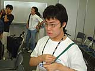
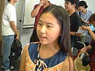
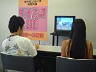
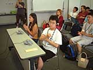
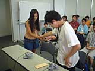
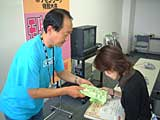
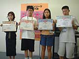

| #9 ポケモンリーグ特別大会 モバイルカップ2001 日本一決定戦 スペースワールド会場にて ついにチャンピオン決定！ |
ポケモンリーグ特別大会 モバイルカップ2001 日本一決定戦 スペースワールド会場にて ついにチャンピオン決定！ page1 ・・・ page2 |
|
さて、いよいよ決勝戦です。決勝戦に進出したお二人が、それぞれ意気込みを話してくれました。 |
|
──永井くん：紫織ちゃんの使ったポケモンは、みんな僕のニョロボンが苦手としているポケモンばかりなので、ちょっと分が悪いかな。でも、勝つ自信はあります。 ──山本さん：一生懸命がんばります。 |
|   |
| ＜決勝戦＞ |
|
永井 章博くん（トレーナー名/ウィル）VS 山本 紫織さん（トレーナー名/しおり） "つのドリル"、"じわれ"といった一撃必殺ワザが外れまくる永井くんに対し、堅実にダメージを与えていく山本さん。永井くんのケンタロス、ニョロボンが倒れ、一方的な試合になるかと思いきや、最後のカビゴンが粘りに粘って、なんと永井くんの逆転勝利！ これには、応援に来ていたトレーナーたちの家族もビックリ。優勝は、永井くんに決定です。 |
|    |
|
──トランセル種市さんのコメント 一撃必殺のワザで攻める永井くんですが、最後、カビゴンだけになってからは"メロメロ"や"のしかかり"で相手の行動を制限する戦い方に変えてきましたね。本当に良い戦いでした。 |
|
と、いうわけで、ポケモンリーグ特別大会 モバイルカップ2001を制したのは、永井 章博くんでした。本当におめでとう！ |
|
その後、表彰式が行なわれ、４人にはそれぞれ賞状とセレビィカラーのゲームボーイアドバンスが贈られました。さらに、優勝した永井くんには、カードｅリーダーの目録が贈られます。 この大会の詳細は、後日任天堂ホームページに掲載する予定ですので、ぜひご覧になってください。 |
|   |
|
最後に、素晴らしい戦いを見せてくれた４人のトレーナーに、それぞれコメントを頂きました。 ４位：藤田 美蘭さん 今回は、一撃必殺のワザを使わないでチャレンジしてみました。でも、"じわれ"返しをやられちゃいましたね。 ３位：落合 浩太郎くん みんな強かったです。特に、山本さんのプテラは予想外でした。"メロメロ"対策をしてなかったのが敗因ですかね。 準優勝：山本 紫織さん 緊張しちゃいました。みんなもプテラを使ってくると思ってたんですけど、予想が外れちゃった。最後は、プテラがマヒしなければ勝てたと思うので、ちょっと悔しいです。 優勝：永井 章博くん みんな本当に強かったです。藤田さんは特に警戒してたので、勝てて良かった。紫織ちゃんにも押されてたけど、ぜんぜん諦めてませんでしたよ。勝つと信じて戦いました。あ、最後に、全国のみんなに「自分らしいバトルをしようよ」ってメッセージを載せといてください（笑）。 |
ポケモンリーグ特別大会 モバイルカップ2001 日本一決定戦 スペースワールド会場にて ついにチャンピオン決定！ page1 ・・・ page2 |
| 前のレポートへ | 次のレポートへ |
|
|